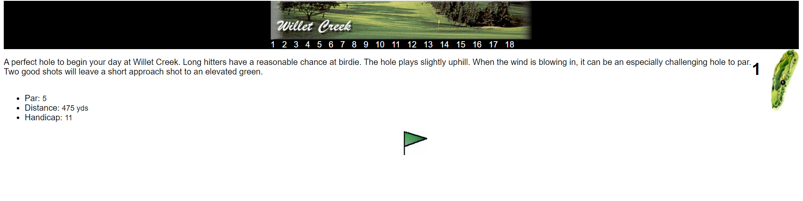
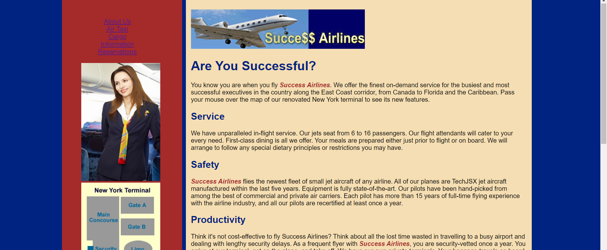
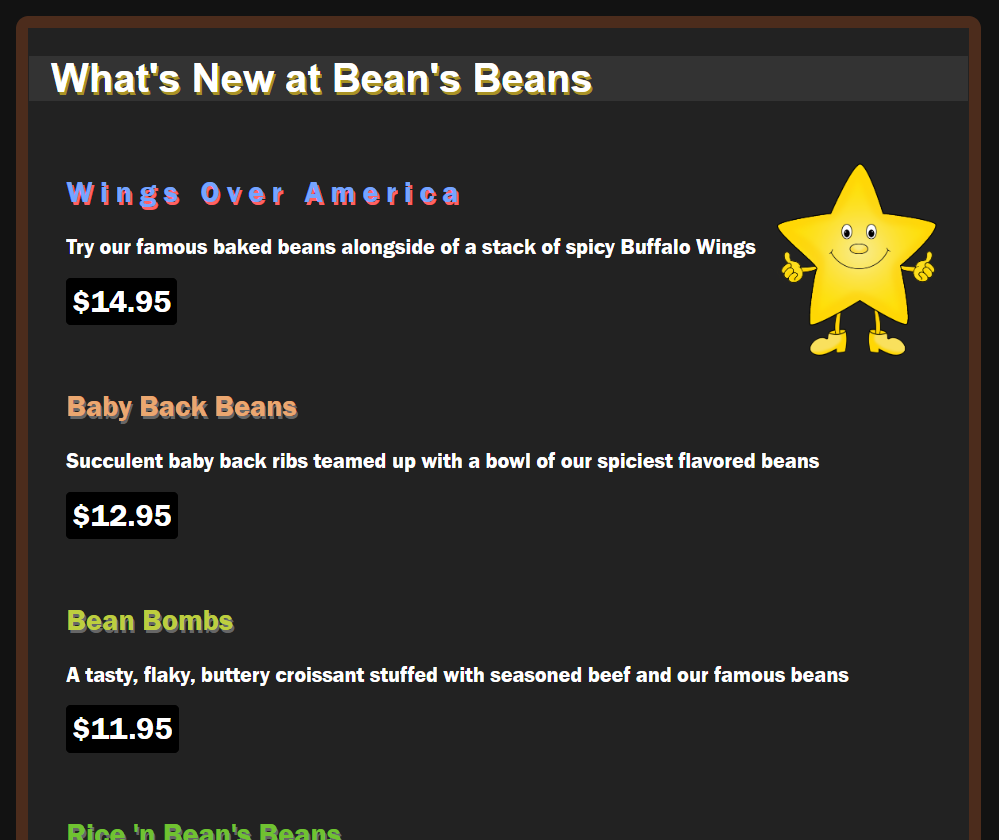
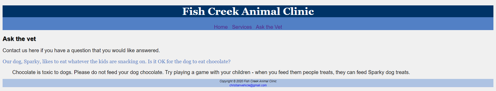
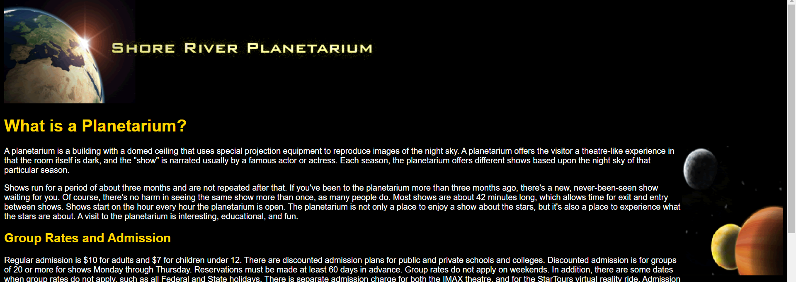

About!
These are the projects I've currently done in HTML in the computer science technology program.
-
Willet Creek Golf
For this assignment, I used a grid layout. This made it so when you would resize the page, the images would stay at the same place. The grid layout is also good for aligning the images and text.
 -
Success Airlines
For this assignment, I was tasked with making a working map with an image map because of all the spots you can click on that map. I was also tasked with finding an icon and additionally, keywords and a description for the Flight, Photos, and Taxi sites.
 -
Bean's Beans
For this assignment, I had to make an online menu for the Bean's Beans restaurant. It had to look like it was a chalkboard. To do this, I added a brown border and a dark gray background for the wrapper. The images were all floated to the left, with the exeption of the image of the star, which is floated right. The menu items all had different text colors and text shadow colors too.

Other assignments (non-clickable)
-
Fish Clinic
For this assignment, I redid the Champlain Animal Clinic to turn it into the Fish Clinic. It now looks nicer than it did before, like how the assignment wants it to be. This assignment required me to use embeded css.
 -
Planetarium
For this assignment, I had to make a website for a Planetarium using inline css. It was also the first time I used color and images in this sort of way. Like how the pictures and text aren't entirely seperate from each other.
